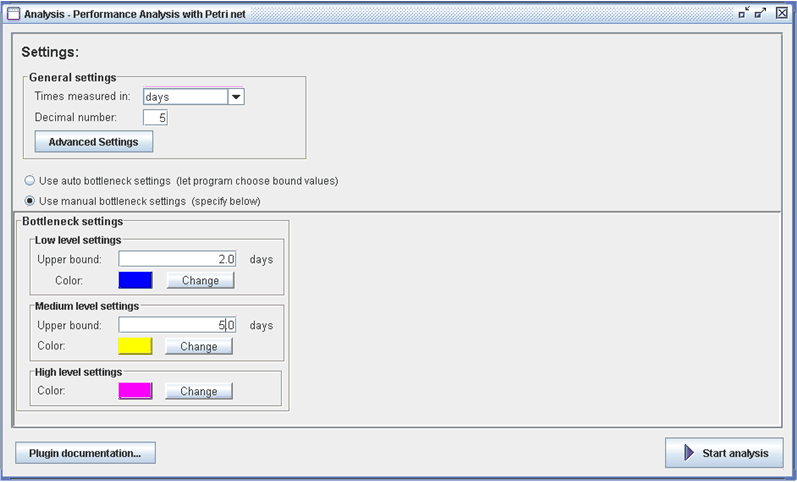
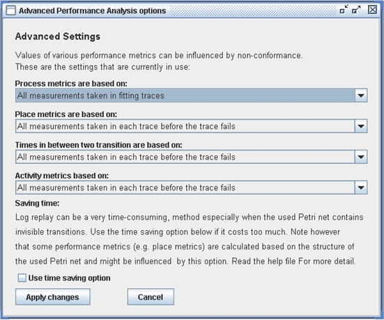
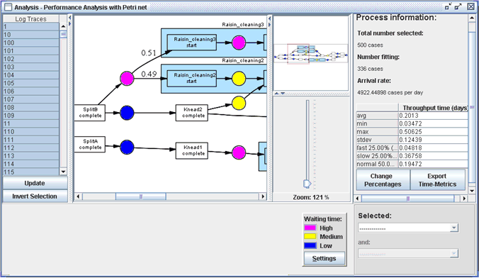
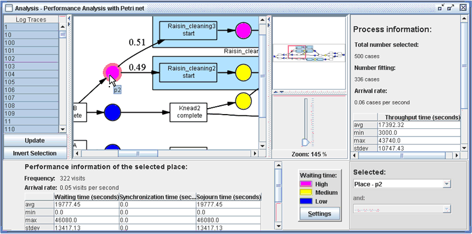

The purpose of the performance analysis plug-in is to provide you with a means to assess the performance of your processes.
Main focus here is to provide you with Key Performance Indicators, which can be summoned in an intuitive way. This is done with
help of a process log and a process model (in form of a Petri net) of the process under consideration. The used process model
can be user-defined (and imported into the ProM-framework), or a model obtained by process mining. By replaying the log traces
of the process log in the process model, the performance analysis plug-in retrieves the values of various Key Performance
Indicators. The process model is used as an interface, through which the performance information can be summoned.
The log replay method (also used in the conformance checker plug-in) is used to derive performance information out of a log with help of a process model. The log replay method simulates the process instances in the input log in the Petri net. To be able to do this, events in the log have to be associated with transitions in the Petri net. During log replay, every time an event occurs in a log trace, (one of) its corresponding transition(s) in the Petri net is fired and measurements are taken. I n this way, performance information can be obtained, like for instance routings at XOR-splits and the time that cases, represented by tokens, spend at certain places within the process. We distinguish four groups of performance information:
Process metrics
The following process-related metrics are derived by this plug-in:
Place metrics
The place-related metrics that are derived consist of:
Two-transitions metrics
For each two (visible) transitions in the Petri net, the following metrics are available:
The exact values of activity time metrics (waiting, execution and sojourn time) can only be calculated when in the used log and Petri net there are schedule, start and complete events present for all activities. However, when you are using a log and a Petri net which contain less information, upper bounds of the values of activity time metrics are calculated and displayed instead. This can be done because the process model that we have at out disposal defines how activities are interrelated. For instance, suppose the log and the Petri net only contain start and complete events/transitions. In such case, execution times can be calculated in a regular fashion. Since we do not know when the activity was scheduled, we can at best calculate an upper bound for the waiting time and the sojourn time of the activity. This can be done by pretending that a schedule did take place at the moment that the last activity that is a direct precessor of this activity was completed. The current activity may actually have been scheduled, at every moment after this moment, it is unknown when exactly.
It is not always possible to calculate upper bounds for all activity time-metrics however. When for instance, in a log only complete events exist, only an upper bound for the sojourn time (which then naturally is also an upper bound for the waiting time and execution time) can be calculated. On the other hand, if only start events occur, it is possible to calculate upper bounds for all activity time-metrics, but in this case the upper bounds of execution time and sojourn time of each activity do overlap with the upper bounds of waiting time and sojourn time of its direct successor(s). To show the difference between normal (i.e. exact) values and bound values for activity metrics, bound values are displayed in red.
This plug-in requires a Petri net and an associated log as input. Associating a log to a Petri net can be done in the following way:
First, open the log file (in MXML format). Then import the process model via choosing File -> Open [process format] file -> With: [log] from the menu.
This process model must either be available in some Petri net format (a .tpn or .pnml file) or in another modelling
paradigm that can be read by ProM (such as an EPC or a YAWL model), which can then be converted into a Petri net by
dedicated conversion plug-ins within the framework. Another possibility is of course to mine a process model out of
the event log using one of the mining plug-ins.
When a Petri net and an associated log have been provided, and the plug-in has been started, you will first see a screen where you can specify the initial settings. In the example shown below, the user has chosen to have all time-related performance metrics to be given in days and to have the metrics given with an accuracy of up to five decimal places. Instead of days, the user could have selected: milliseconds, seconds, minutes, weeks, months (30 days) and years (365 days)

The user has also specified to use `manual bottleneck settings'. A bottleneck in a process is a place with a high average waiting time. Three bottleneck levels are distinguished: low, medium and high and each of these levels has its own settings. After calculation, the used Petri net will be visualized with places colored according to their waiting time level. At low level and medium level, you can specify the upper bound of the levels. In the example, the user has specified the upper bound at low level to be 2 days, which means that every place which has an average waiting time associated to it of 2 days or less is considered to be of low level, and will be colored blue (you can change this color, by clicking on the `Change color'-button and choosing the color of your liking). At medium level the user has set the upper bound to 5 days, so every place with an average waiting time between 2 and 5 days (including 5, excluding 2) is considered to be of medium level and will be colored yellow (or the color you selected) and all places with an average waiting time above 5 days will be colored purple (or the color you selected).
If you have no clue on which upper bound values you want to use, you are advised to select the 'use auto bottleneck settings' option instead. Values for upper bounds will then be estimated by the plug-in and standard coloring will be used. Each level will then contain approximately one third of the places.

As mentioned, when calculating the different performance metrics, all process instances in the input log are replayed in the input Petri net. When doing this, it can happen that a process instance does not fit in the Petri net. For instance, when you replay a process instance a registered event can occur in the log, at a moment at which the corresponding transition in the Petri net is not yet enabled. Since process instances are replayed in the Petri net using the non-blocking log replay method, in such case the transition is artificially enabled and fired anyway. This has its consequences for the measurements taken. There are many ways to deal with this non-conformance, which may be appropriate for different situations. It is therefore possible to set up how the plug-in should deal with this behaviour yourself in the advanced settings. These advanced settings are related to the different metric-types.
Process metrics can be based on:
Place metrics can be based on:
Time-in-between metrics can be based on:
Activity metrics can be based on:
Time saving option
When the Petri net that is used as input to this plug-in contains many invisible transitions, the replaying of the log may take
a lot of time, due to the method used. This method builds a coverability graph every time that a transition is not immediately
enabled, i.e. not all input places contain a token. This is done to discover if there is a sequence of invisible transitions that
do enable the transition.
When there are many invisible transitions in the Petri net or the Petri net is very complex, then this may take a lot of time.
If time is not on your side, you can select the `use time saving option'. This will result in no coverability graphs being build
during log replay. Note however that this may have its affect on the values of the varying performance metrics, since process
instances that would normally conform to the Petri net can now become `non-fitting'.
When all options have been set, you can press the 'Start Analysis' button, the program will then start the performance analysis using the specified settings.
After calculation is done, you will see a screen as the one depicted below

As you can see (in figure \ref{scrshot}, a visualization of the used Petri net is displayed at the center of the screen. Within the shown Petri net, at XOR-splits, (i.e. places with more than one outgoing arc), the probability that a token chooses a certain branch is shown. In the XOR-split in the example above, you can see that the chance that a token travels over the branch that goes to transition `Raising\_Cleaning3 - Start' is 51\% and the chance that a token travels over the other branch is 49\%. As said, places in the Petri net are colored according to their average waiting time. This should make it easier for you to spot the location of possible bottlenecks within your process. Below the Petri net, a legend is shown in which you can see which color belongs to which waiting time level. In the example, the purple-colored place is said to have a high average waiting time and may thus be a bottleneck.
Left of the Petri net visualization, a table is displayed that contains the names of all process instances in the input log. You can select or deselect these (names of) process instances. Initially all process instances are selected. If you press the `Update'-button after selecting process instances, the displayed performance information will be based on the now selected instances only. If you press the `Invert Selection'-button all the process instances that are currently not selected get selected and all process instances that are currently selected, get deselected.
On the right hand side of the window, process-related metrics are displayed. Note that not only the average throughput time is displayed, but also the minimum, the maximum, the standard deviation and the average time of the fastest process instances (initially 25\% of the total number of selected process instances) which have the lowest throughput time, the average time of the slowest process instances (also 25\% initially) and the average time of all other process instances (obviously 50\% initially). You can adjust the percentages, by pressing the 'Change Percentages'-button below the throughput time table and filling in the new percentages in the dialogs that will appear. Next to this, you also have the possibility to export the throughput times of all selected process instances to a comma-separated text file (.csv or .txt) by pressing the 'Export Time-Metrics'-button and filling in or selecting a filename. Such files can be loaded into Microsoft Excel or StatGraphics for further analysis.
Metrics belonging to a place can be viewed by selecting the place that you want to study more closely. You can select it, by
selecting its name in the (upper) selection box on the lower right side of your screen or by clicking on it within the Petri
net.
In the example below, the user has selected the (possible bottleneck) place with name p2.

In a similar manner two transitions can be selected, after which the absolute time tokens spend in between these two transitions is displayed. Note that per process instance only one measurement is taken, namely the time between the first firing of the one transition during log replay and the first firing of the other transition. Metrics belonging to an activity can be viewed by selecting a transition that is part of the activity. Each normal (visible) transition is associated to an activity.
Just like with the throughput time, of each time metric (time-between, activity and place time metrics) the average, minimum, maximum, standard deviation and the average time of the fastest measurements (initially 25\% of the total number of visits to the place), i.e. measurements with the lowest times, the average time of the slowest measurements (also 25\% initially), i.e. measurements with the highest times, and the average time of all other visits (obviously 50\% initially) is calculated. The time metrics are displayed in the table on the panel below the Petri net. You can adjust the percentages of slow, fast and normal measurements, by pressing the `Change Percentages'-button below the table, and filling in the percentages that you want to use in the dialogs that will appear. Next to this, you also have the possibility to export the times of all measurements of a time-metric to a comma-separated text file (.csv or .txt) by pressing the `Export Time-Metrics'-button and filling in or selecting a filename. Such files can then be loaded into other tools, such as for example Microsoft Excel or StatGraphics, for further analysis.
When you press the 'Change Settings'-button below the waiting time legenda, a window will appear which looks quite similar to the
'Initial Settings'-window. Here you can adjust the following settings:
- The time unit in which metrics are displayed (milliseconds, seconds, minutes, hours, days, weeks, months, years).
- The accuracy of the displayed metrics, i.e. the number of decimal places that a metric can have at most.
- The values of the bounds between the waiting time levels.
- The colors corresponding to the waiting time levels.
When a place was selected when you pressed the `Change Settings'-button, you can also choose to apply the filled in bound-values
and selected level colors to all places in the Petri net, or to apply them only to the selected place.
Furthermore, you can press the `Advanced Settings'-button after which you can specify in the window that pop-ups how the plug-in
should deal with non-fitting traces.